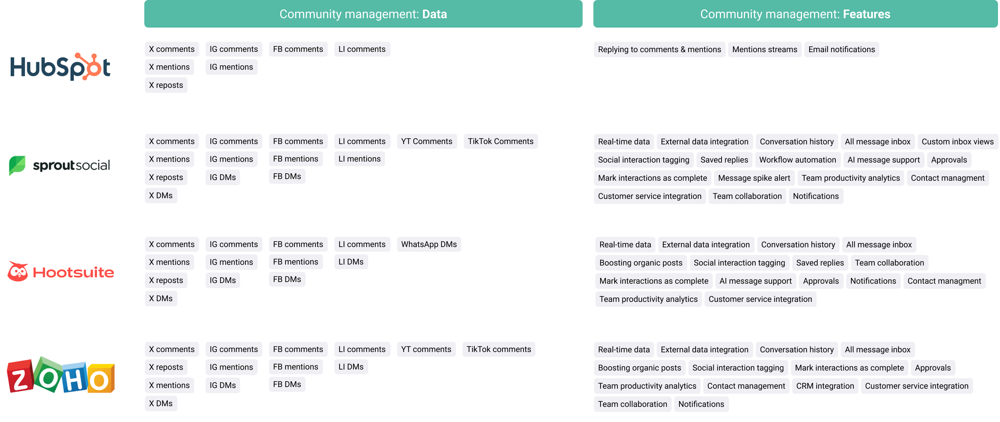
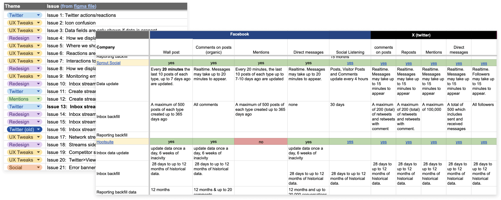
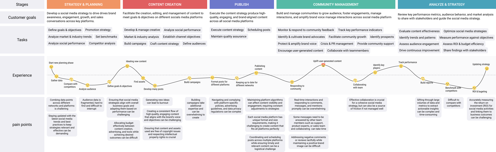

The problem
HubSpot is a CRM platform that helps small-to-medium sized businesses sell, market and provide service to new and existing customers. Its social tool lets businesses schedule and publish posts, reply to interactions, build reporting and perform social listening, all from one place.
Since 2020, the organic social tool had been in steady decline, even though it’s considered a key marketing feature and its adoption drives usage across the rest of HubSpot.
The solutionAn all-in-one social media inbox enabling users to efficiently manage and respond to messages and interactions across multiple networks and brands from a single location.
Team & role
The team
- 5 engineers
- 1 product manager
- 1 senior content designer
- 1 senior product designer 👋
User research
- Competitive analysis
- Product audit
- User journey mapping
- Visioning
- Customer interviews
- Task-based click testing
- Terminology test
Designing
- Wireframing
- User flows
- Information architecturing
- High-fidelity mockups
- Content design
- Prototyping
Product strategy
- Project roadmapping
- Agile project workflow
Testing
- Usability testing
- A/B testing
Background
The value of HubSpot’s social tool is its ability to streamline an omnichannel experience into one platform that manages the entirety of a social media manager’s work: publishing content, building community and analyzing performance.
In September 2023, the community management stage (monitoring and responding) had significantly fewer monthly active users than the creating and publishing stage. Compared to competitors, there were clear gaps in data and feature offerings.

Product audit & market research
I led research evaluating our social monitoring tool against other industry products and identified key areas of concern: missing core functionality, performance issues, and friction points in the experience that contributed to lower adoption.

Research
We focused on the generalist social media manager at a B2B company in the early stages of their social strategy. These users make up over 80% of active users creating and publishing content in the tool.
Often working on marketing teams of 1–3 people, they juggle responsibilities well beyond social, which makes it hard to prioritize and respond to messages in a timely way.
The decisionGiven customer pain points, declining usage and the opportunity in this stage of the journey, we redesigned social communication as a simple, task-oriented inbox.

Get the full story
Learn more about this redesign process and hear some surprising takeaways from the user research. The full, unedited case study is available on request.